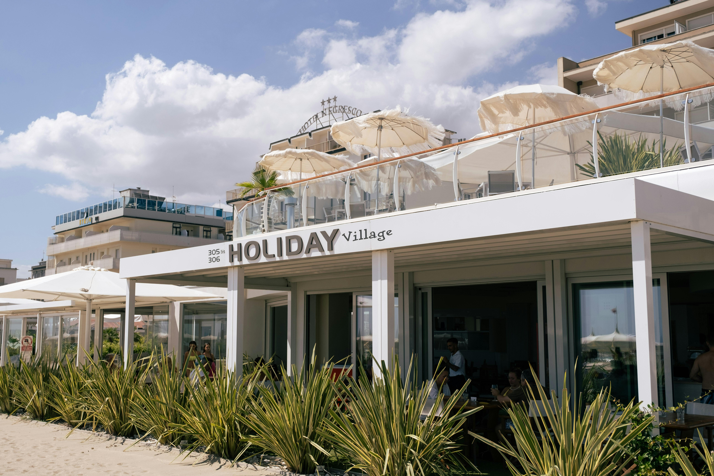
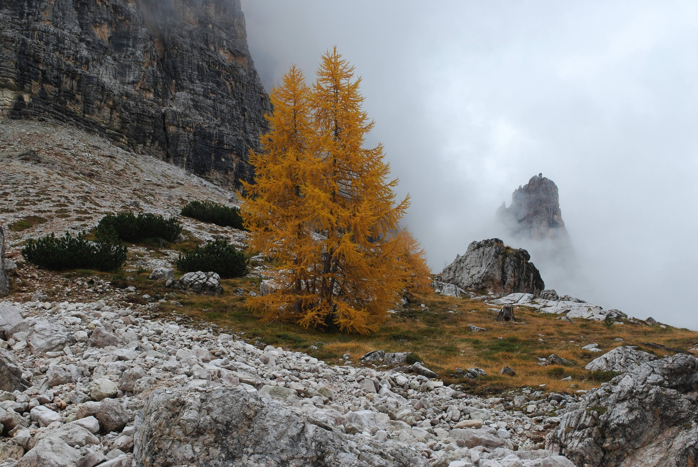

Best Travel Tips

- Best time to visit: Spring (April to June) and Autumn (September to October).
- Book train tickets in advance for the best prices.
- Try local dishes in each region.
- Learn basic Italian phrases; locals appreciate the effort!
- Use public transportation for convenience in cities.
- Respect local customs, especially during religious visits.
Best Cuisines and Dining Recommendations

- Pizza Napoletana from Naples - Known for its soft and chewy crust.
- Pasta Carbonara from Rome - A creamy dish made with eggs, cheese, pancetta, and pepper.
- Risotto from Milan - Creamy rice dish, often made with saffron.
- Seafood from coastal regions - Fresh fish dishes, especially in Sicily.
- Truffles from Umbria - Sought-after for their unique flavor in various dishes.
Best Accommodation Options

- Luxury Hotels: Hotels like Hotel Danieli in Venice offer opulent stays.
- Boutique Hotels: Unique hotels like Gritti Palace in Venice provide charm and character.
- Hostels: Budget-friendly options such as Generator Hostel in Rome.
- Agriturismo: Farm stays in Tuscany offer a rural experience with home-cooked meals.
- Airbnb: Many local hosts provide a cozy stay in the heart of cities.
Best Local Culture and Traditions

- Renaissance Art: Explore works of Michelangelo, Leonardo da Vinci, and others.
- Opera: Attend performances in famous venues like La Scala in Milan.
- Festivals: Participate in local festivals like Venice Carnival and Siena's Palio.
- Culinary Traditions: Each region boasts unique cooking styles and ingredients.
- Traditional Crafts: Visit artisans in places like Florence for handmade goods.
Best Top Tourist Attractions

- Colosseum in Rome - An iconic symbol of ancient Rome.
- Venice Canals - Explore the romantic waterways of Venice.
- Leaning Tower of Pisa - Famous for its unintended tilt.
- Florence's Art - Home to masterpieces in the Uffizi Gallery.
- Vatican City - Visit St. Peter's Basilica and the Sistine Chapel.
- Pompeii - Discover the ruins of this ancient city buried by a volcano.
- Cinque Terre - Experience stunning coastal villages and hiking trails.
Best Transportation Guides

- Trains: Efficient high-speed trains connect major cities.
- Buses: Local and regional buses provide extensive coverage.
- Metro: Cities like Rome and Milan have convenient metro systems.
- Car Rentals: Ideal for exploring rural areas and scenic drives.
- Bicycles: Many cities are bike-friendly, offering rental options.
Best Outdoor Activities and Adventure

- Hiking in the Dolomites - Explore breathtaking mountain trails.
- Beach Activities - Enjoy water sports along the Amalfi Coast.
- Wine Tours - Visit vineyards in Tuscany for tastings and tours.
- Cycling in Puglia - Ride through picturesque countryside and coastal routes.
- Skiing in the Alps - Experience world-class skiing in winter resorts.
Best Weather and Best Time to Visit

- Spring (April to June): Ideal for pleasant weather and blooming flowers.
- Summer (July to August): Hot, especially in southern regions; peak tourist season.
- Autumn (September to October): Mild temperatures and beautiful foliage.
- Winter (November to March): Cold, particularly in the north; great for skiing.
- Regional Variations: Weather varies; the south is warmer than the north.